Acht Tage. Ein 62-Fuß-Katamaran. Das schönste Segelrevier Europas – und du mittendrin.
Von Dubrovnik bis Split segelst du durch die kroatische Inselwelt: türkisblaue Buchten, warmes Oktoberwasser, stille Ankerplätze abseits der Sommer-Menge. Tagsüber Sport, Vorträge und geheime Spots mit Katrin & Sabrina, abends gesunde Küche vom eigenen Bordkoch – während ein erfahrener Skipper das Segeln übernimmt.
Kroatiens Adriaküste mit ihren über 1.200 Inseln gilt als eines der schönsten und sichersten Segelreviere Europas – geschützte Buchten, glasklares Wasser, kurze Strecken zwischen den Häfen. Im Oktober hat sich der Sommertrubel gelegt, das Meer ist noch angenehm warm, die Tage sind mild und golden. Genau die richtige Zeit, um zur Ruhe zu kommen, dich zu bewegen und den Kopf frei zu bekommen – begleitet von einem professionellen Skipper, der für die Sicherheit an Bord sorgt, während du dich ganz auf dich konzentrierst.
Ein 62-Fuß-Luxuskatamaran mit reichlich Platz an Deck, großzügigem Salon und komfortablen Kabinen – gebaut für genau dieses Revier. Ihr seid maximal 8 FitWeek-Gäste an Bord, dazu die dreiköpfige Crew, die sich um Segeln, Service und Küche kümmert.
Katrin & Sabrina, dazu Skipper und Bordkoch – gemeinsam sorgen sie dafür, dass Bewegung, Gesundheit, sicheres Segeln und die schönsten Ecken der Adria zusammenkommen.
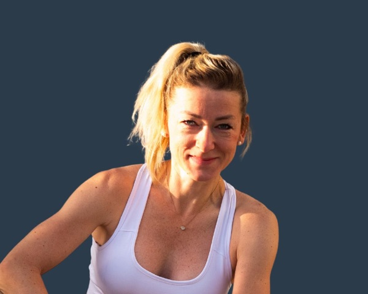
Wie gewohnt sorgt Katrin für Bewegung, Impulse und gute Energie an Bord – mit Workouts an Deck, Mindset-Sessions und einem offenen Ohr für jede Teilnehmerin.
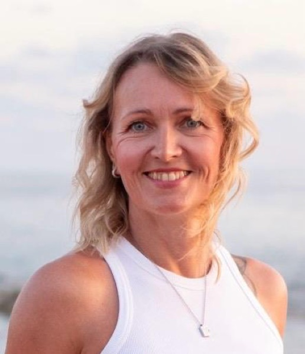
Sabrina ist Ärztin, erfahrene Skipperin und leidenschaftliche Seglerin. Mit über 20 Jahren Segel-Erfahrung und seit 2011 mit Katamaranen unterwegs. Sie kennt die schönsten Buchten, versteckte Lieblingsplätze und besondere Aktivitäten an Land in dem Revier – und ist als Ärztin auch an Bord, falls einmal medizinische Hilfe benötigt wird.
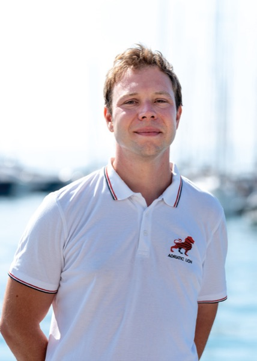
Igor segelt seit seinem 10. Lebensjahr und ist seit über acht Jahren als Kapitän unterwegs – auf Katamaranen bis 70 Fuß in der Adria und im Mittelmeer. Routenplanung, Sicherheit und ein entspanntes Gefühl an Bord sind bei ihm in den besten Händen.
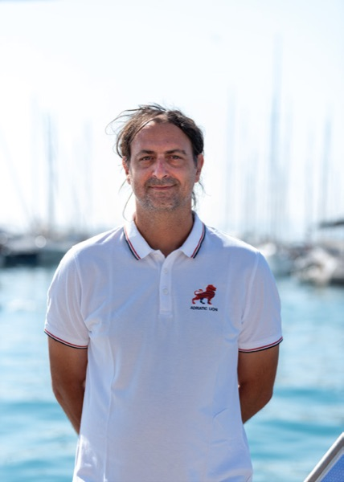
Seit 15 Jahren kocht Luka auf Yachten und ist Spezialist für dalmatinische Küche. Am liebsten arbeitet er mit frischem Fisch, den er in seiner Freizeit selbst angelt – Kochen ist für ihn eine echte Leidenschaft.
8 Tage, 7 Inseln & Buchten, 148 Seemeilen – von Dubrovnik bis Split, in gemütlichen Etappen von 6–7 Knoten Durchschnittsgeschwindigkeit.
🧭 Geplante Route: Die Stopps und Reihenfolge unten sind sorgfältig geplant – aus Sicherheitsgründen entscheidet der Skipper aber situativ vor Ort. Bei Wind und Wetter kann es kurzfristig zu Änderungen einzelner Ankerplätze oder der Reihenfolge kommen.
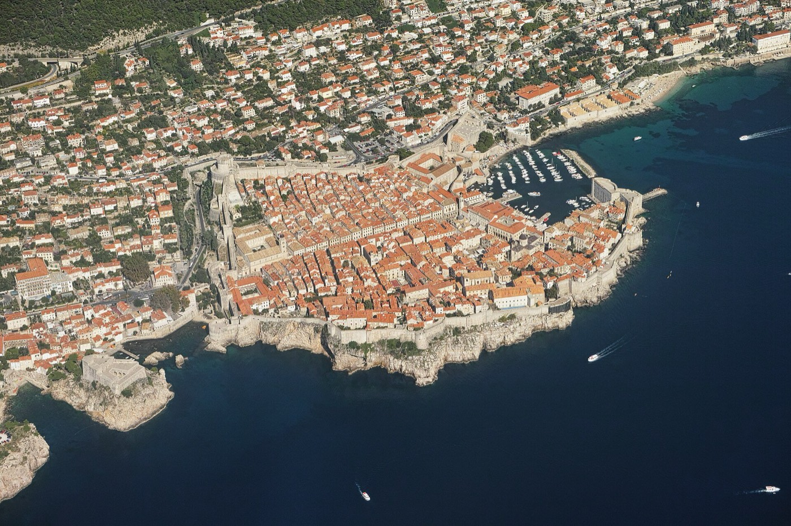
Anreise nach Dubrovnik, Bootsübernahme mit Sicherheitseinweisung – und ein erster Abend in der berühmten Altstadt.
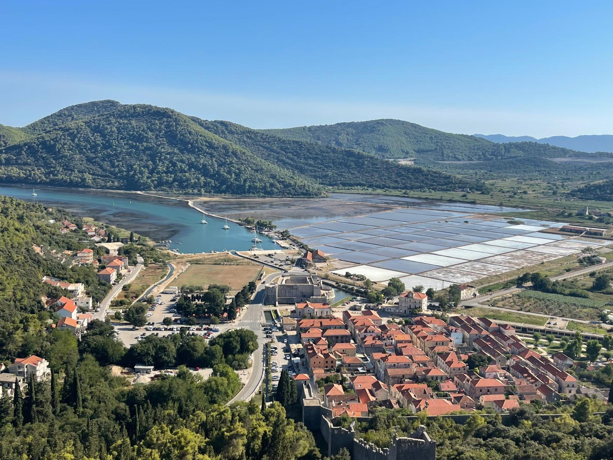
Vormittags Zeit für die Altstadt, mittags Ablegen Richtung Stonski Kanal. Zu Fuß geht es über die historische Steinmauer nach Ston – mit Blick auf die weltberühmten Salzgärten und den Ort von oben.
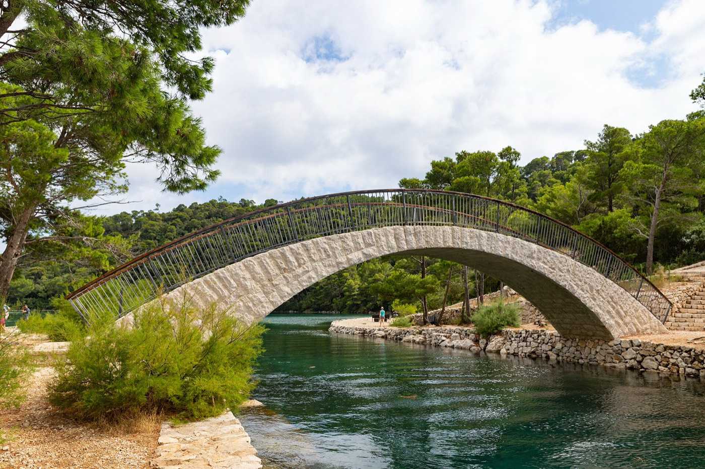
Ein ganzer Tag im Nationalpark Mljet: Auf dem Fahrrad geht es entlang der türkisfarbenen Salzseen – Ruhe und Natur pur, mitten im ältesten Nationalpark der Adria.
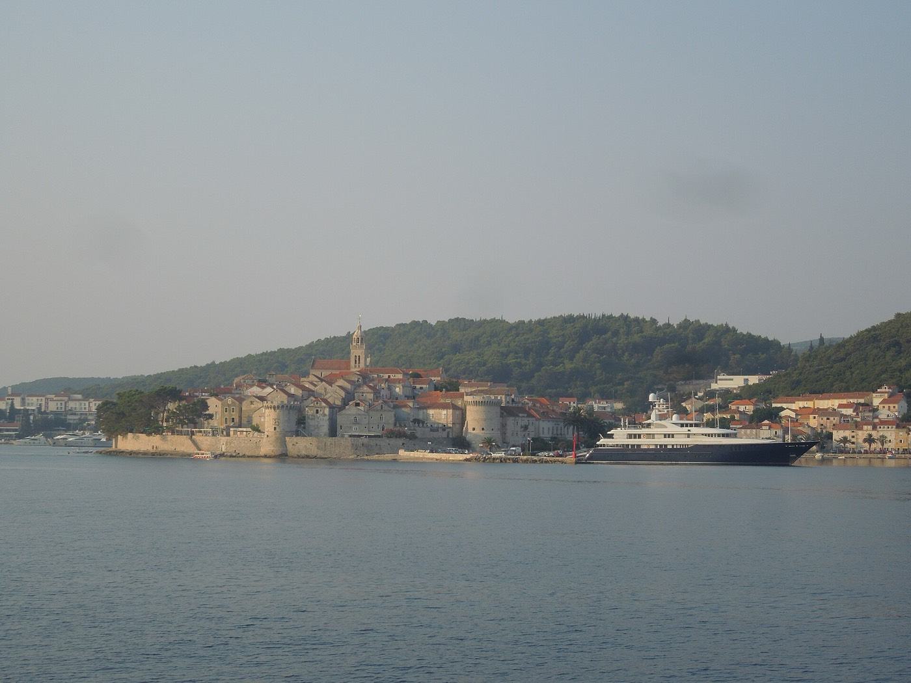
Der Moment, wenn du um die Ecke kommst und zum ersten Mal die Stadtmauer von Korčula siehst, bleibt hängen – die Altstadt ist einfach traumhaft schön. Am Nachmittag ist Zeit für einen entspannten Bummel durch die Gassen und ein bisschen Shopping, optional mit einem Abstecher zum Franziskanerkloster auf der vorgelagerten Insel Badija.
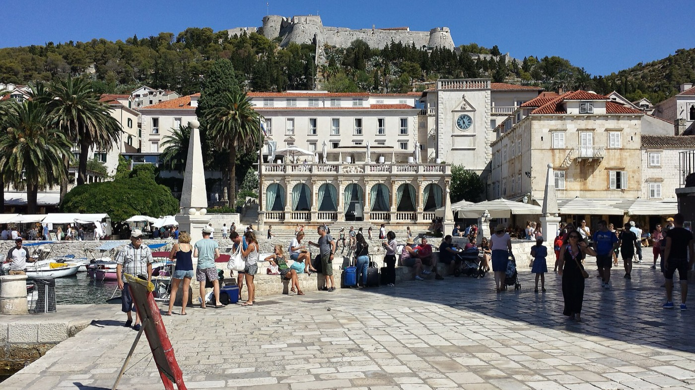
Spaziergang durch die Altstadt von Hvar mit Besuch der Festung Španjola hoch über der Stadt. Am Abend ankern wir in den türkisblauen Buchten der Pakleni-Inseln.
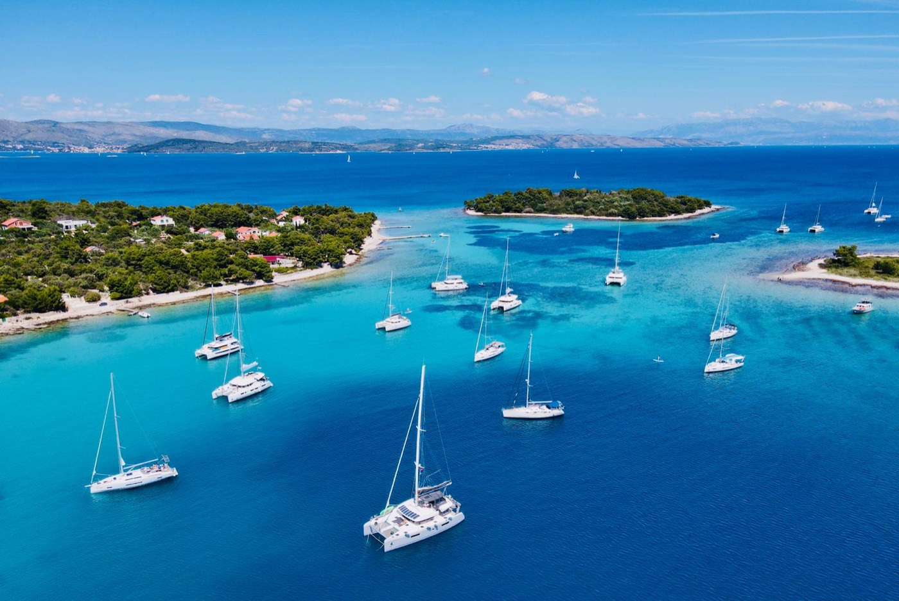
Wir ankern in der berühmten Blue Lagoon – genau hier ist auch unser Profilbild entstanden. Am letzten gemeinsamen Abend genießen wir das Essen in der Beach Bar Škoy, mit der wir freundschaftlich verbunden sind.
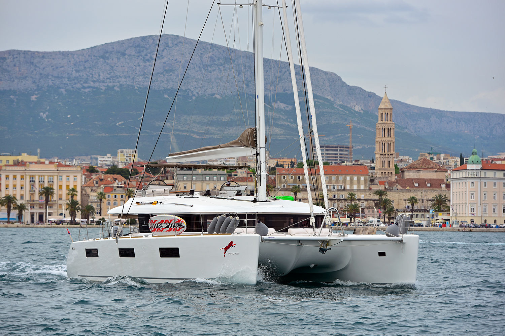
Ankunft in der Marina Kaštela, etwas außerhalb des Zentrums. Wer noch Zeit hat, bevor es nach Hause geht, kann die Altstadt von Split erkunden oder zur Aussichtsplattform am Kap Marjan hochgehen.
Wie gewohnt wird bei der FitWeek gesund gekocht – diesmal übernimmt das der eigene Bordkoch für euch. Frische, mediterrane Küche direkt an Deck, mit Blick auf die nächste Bucht.
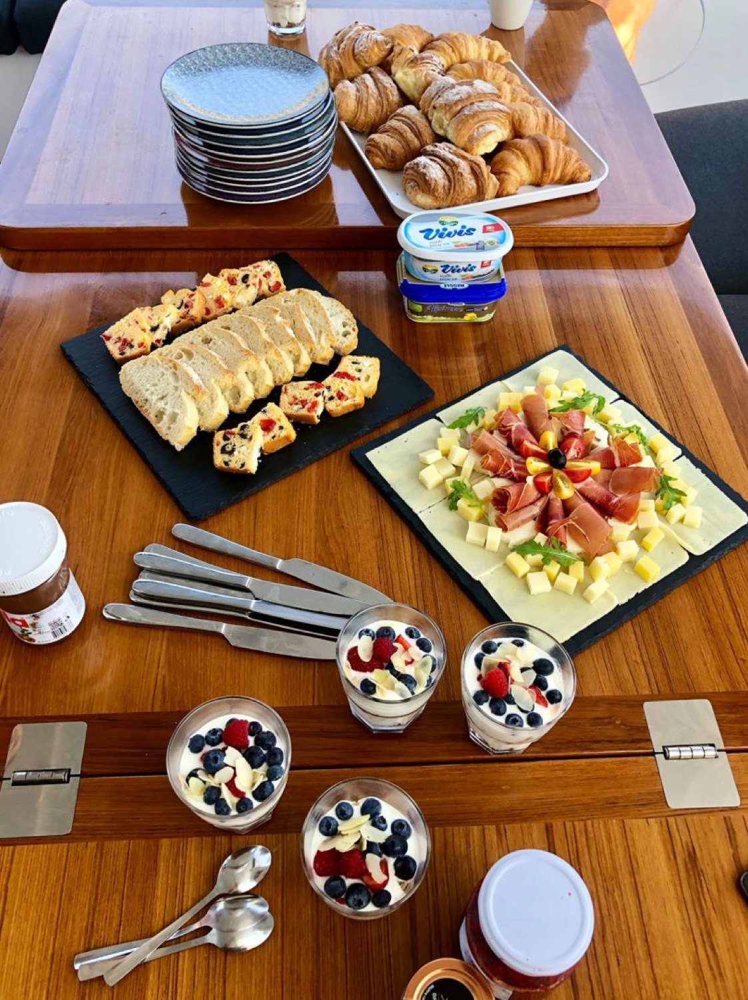
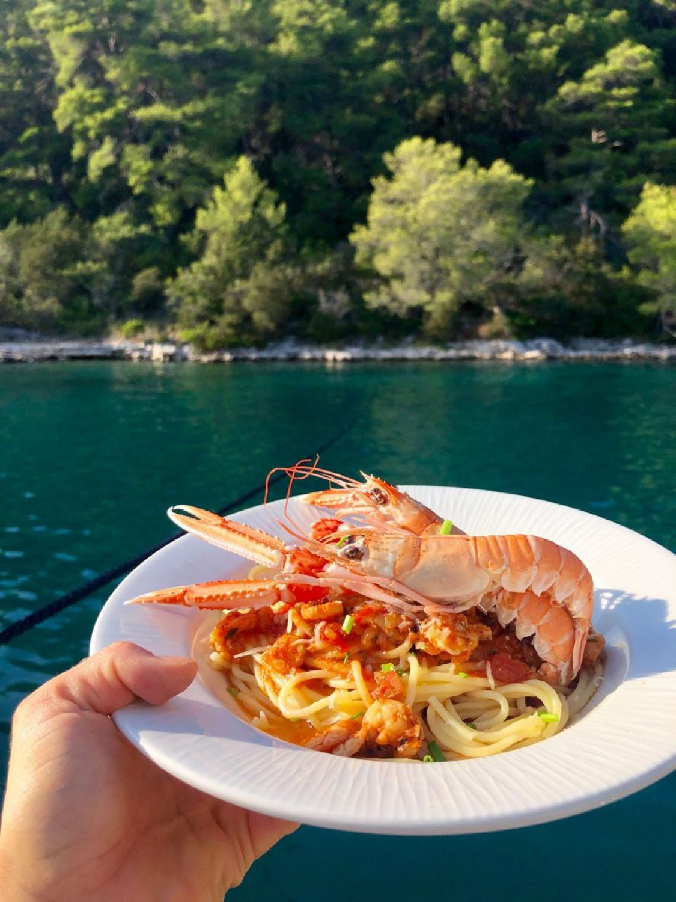
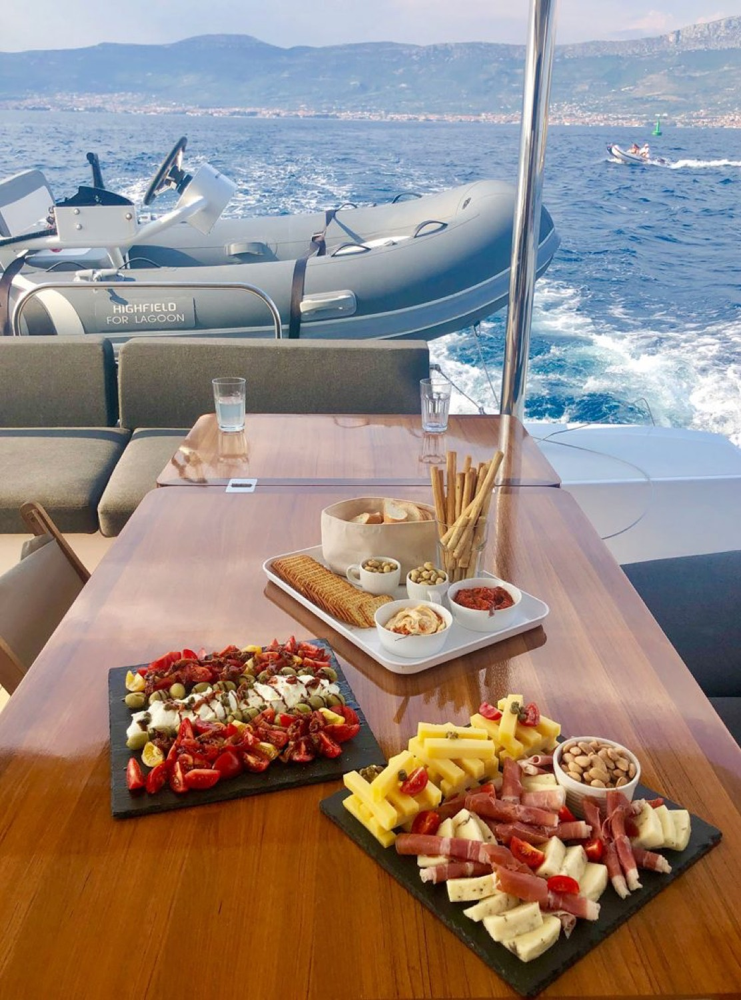
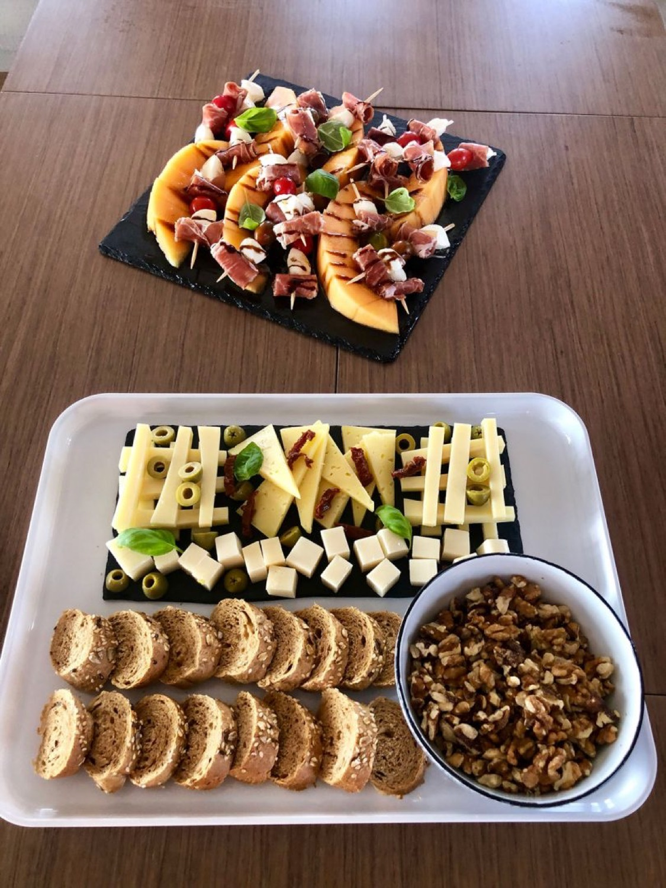
Dein Preis deckt Kabine, Vollverpflegung, Skipper, Sport und Programm für die komplette Woche ab.
Unterbringung in Doppelkabinen mit eigenem Bad
Frisch & gesund gekocht vom eigenen Bordkoch
Professionelles Segeln, ihr genießt die Fahrt
Trainingseinheiten mit Katrin an Deck & an Land
Mindset- & Gesundheitsimpulse mit Katrin & Sabrina
Geheime Spots & Landgänge mit Sabrinas Ortskenntnis
SUP, Schnorchel-Equipment & Wassertube inklusive
Sabrina ist während der ganzen Reise dabei
Eine kleine Überraschung wartet an Bord auf dich – lasst euch überraschen
Schöne Erinnerungsbilder von eurer Woche, professionell eingefangen
€3.200 pro Person in der Doppelkabine. Du möchtest eine Kabine für dich allein? Preis für Einzelkabinen auf Anfrage.
Anreise nach Dubrovnik, Abreise ab Split – so vermeidest du unnötige Umwege.
Flug zum Flughafen Dubrovnik (DBV), Anreise am 03.10.2026. Von dort geht es direkt zur ACI Marina Dubrovnik in Komolac (M4CG+C7 Komolac, Kroatien).
Rückflug ab Flughafen Split (SPU) frühestens am 10.10.2026, nach Ankunft in der Marina Kaštela (GCW3+G9 Kaštel Gomilica, Kroatien).
💡 Tipp gegen teure Gabelflüge: Zwischen Dubrovnik und Split verkehrt eine Schnellfähre (ca. 4 Std.) – so kannst du bei Bedarf auch am selben Flughafen hin- und zurückfliegen.
Diese Reise findet nur statt, wenn sich mindestens 6 Teilnehmerinnen anmelden. Je früher du buchst, desto sicherer wird deine FitWeek 2026 auf dem Wasser.
Jetzt Platz sichernNur 8 Plätze. Meld dich unverbindlich bei Katrin – alle Details zur Anmeldung klärt ihr gemeinsam per WhatsApp.
Deine Daten werden gemäß unserer Datenschutzerklärung verarbeitet.
⚠️ Personen mit Diabetes, Herz-Kreislauf-Erkrankungen oder Schwangerschaft bitte vorab ärztliche Rücksprache halten.